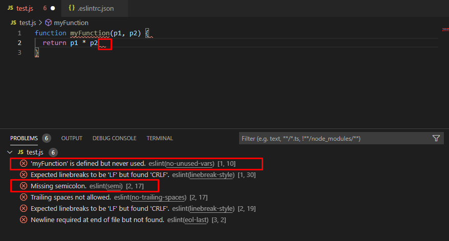

VS Code для вёрстки
ESLint - это расширение для Visual Studio Code, предназначенное для проверки соответствия стандартам написания кода на JavaScript. Это инструмент относится к категории линтеров, программ, специализированных на анализе и оценке кода с целью выявления потенциальных ошибок, несоответствий стандартам и соблюдения современных практик кодирования.
Линтеры, такие как ESLint, играют важную роль в обеспечении качества кода и соблюдении стандартов разработки. После проведения анализа кода, ESLint выделяет возможные ошибки, неточности и стилистические несоответствия, делая их видимыми для разработчика. Это дает возможность обнаружить проблемы на ранних этапах разработки, что способствует улучшению читаемости, поддерживаемости и безопасности кодовой базы.
Использование ESLint в интеграции с Visual Studio Code значительно упрощает процесс разработки, поскольку разработчик может мгновенно увидеть выделенные ошибки и предложения по их исправлению. Это способствует повышению эффективности работы и обеспечивает соблюдение стандартов в проектах, что особенно важно в современной разработке программного обеспечения.
